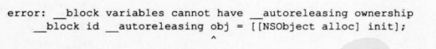

block说明符可指定任何类型的自动变量
下面指定用于赋值 Objective-C对象的i类型自动变量
__block id obj = [[NSObject alloc] init];
其实该代码等同于:
__block id __strong obj = [[NSobject alloc] init]
ARC有效时,id类型以及对象类型变量必定附加所有权修饰符,缺省为附有__strong修饰
符的变量
该代码可通过 clang转换如下
/*__b1ock变量用结构体部分*/
struct __Block_byref_obj_t_0{
void* __isa:
__Block_byref_obj_0* __forwarding
int __flags:
int __size:
void(* __Block_byref_id_object_copy)(void*, void*);
void ( __Block_byref_id_object_dispose)(void*)
__strong id obj;
};
static void __Block_byref_id_object_copy_131 (void *dst, void *src)(
_Block_object_assign((char*)dst 40,*(void **)((char*)src + 40), 131);
static void_Block_byref_id_object_dispose_131(void *src)(
_Block_object_dispose(*(void **)((char*)src +40),131);
/*block变量声明部分*/
__Block_byref_obj_0 obj={
0,
&obj,
0x2000000,
sizeof( __Block_byref_ob3_0),
__Block_byref_id_object_copy_131,
__Block_byref_id_object_dispose_131,
[[ NSObject a11oc]init]
}
在这里出现了上一节讲到的 __Block_object_assign函数和 _Block_object_dispose函数
在Blck中使用附有__strong修饰符的id类型或对象类型自动变量的情况下,当 Block从栈复制到堆时,使用_Block_object_assign函数,持有 Block截获的对象
当堆上的 Block被废弃时,
使用_Block_object_dispose函数,释放Block截获的对象
在 __block变量为附有 __strong修饰符的id类型或对象类型自动变量的情形下会发生同样的
过程
当 __block变量从栈复制到堆时,使用_Block_object_assign函数,持有赋值给__block
变量的对象
当堆上的__block变量被废弃时,使用_Block_object_dispose函数,释放赋值给
__bock变量的对象
由此可知,即使对象赋值复制到堆上的附有__strong修饰符的对象类型__block变量中,只要 __block变量在堆上继续存在,那么该对象就会继续处于被持有的状态
这与 Block中使用赋
值给附有 __strong修饰符的对象类型自动变量的对象相同
另外,我们前面用到的只有附有 __strong修饰符的id类型或对象类型自动变量
如果使用
__weak修饰符会如何呢?首先是在 Block中使用附有__weak修饰符的id类型变量的情况
blk_t blk;
{
id array [[NSMutableArray alloc] init];
id __weak array2= array;
blk= [^(id obj)(
[array2 addobject: obj];
NSLog(@"array2 count %d", [array2 count]);
} copy ];
}
blk([[NSObject alloc] init]);
blk([[NSObject alloc] init]);
blk([[NSObject alloc] init]);
该源代码的执行结果与236节的结果不同
array2 count = 0 array2 count = 0 array2 count = 0
这是由于附有__strong修饰符的变量aray在该变量作用域结束的同时被释放、废弃,nil被
赋值在附有__weak修饰符的变量aray2中
该代码可正常执行,具体如下
若同时指定__block说明符和__weak修饰符会怎样呢?
blk_t blk;
{
id array = [[NSMutableArray alloc] init];
__block id __weak array2 = array;
blk [^(id obj) {
[array2 addobject: objl;
NSLog(@"array2 count %ld", [array2 count]);
} copy];
}
blk([[NSObject alloc] init]);
blk([[NSObject alloc] init]);
blk([[NSObject alloc] init]);
执行结果与之前相同
array2 count =0 array2 count =0 array2 count =0
这是因为即使附加了__block说明符,附有 __strong修饰符的变量aray也会在该变量作用
域结束的同时被释放废弃,nil被赋值给附有__weak修饰符的变量aray2中
另外,由于附有__unsafe_unretained修饰符的变量只不过与指针相同,所以不管是在 Block
中使用还是附加到__block变量中,也不会像__strong修饰符或__weak修饰符那样进行处理
因此在使用附有 __unsafe_unretained修饰符的变量时,注意不要通过悬垂指针访问已被废弃的
对象
因为并没有设定__autoreleasing修饰符与 Block同时使用的方法,所以没必要使用
__autoreleasing修饰符
另外,它与__block说明符同时使用时会产生编译错误
__block id __autoreleasing obj = [[NSObject alloc] init];
变量obj同时指定了__autoreleasing修饰符和__block说明符,这会引起编译错误:
